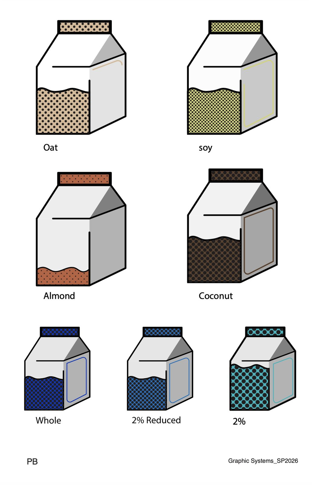
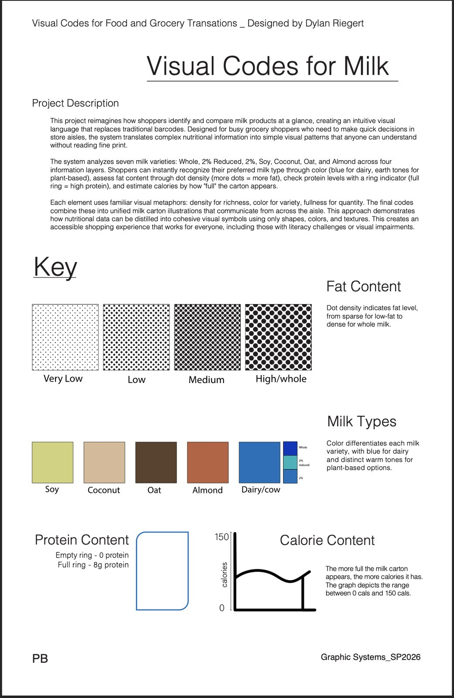

Case Study 01 · Information design
Visual Codes
for Milk
A visual language that replaces fine print with shapes, color, and texture, so any shopper can compare milk from across the aisle without reading a word.


Challenge
Milk packaging asks people to read small print to compare products. In a busy aisle shoppers decide in seconds, and anyone with low literacy or low vision is left out entirely.
Approach
I broke nutrition down into four layers of information and gave each one a familiar visual metaphor: color for variety, density for richness, a ring for protein, and fullness for calories. Together they form a single carton-shaped code.
Outcome
A barcode alternative that tells seven milk varieties apart using only shapes, colors, and textures. Its modular logic is built to extend to other grocery categories.
The system
Four layers. One glance.
-
Color
Milk type
Blue for dairy; warm, earthy tones for plant-based options.
-
Dot density
Fat content
Sparse dots for low-fat, dense dots for whole milk.
-
Ring
Protein
An empty ring means 0 g of protein; a full ring means 8 g.
-
Fill level
Calories
The fuller the carton looks, the more calories it has (0–150).
- Milk varieties
- 7
- Information layers
- 4
- Words needed to read it
- 0